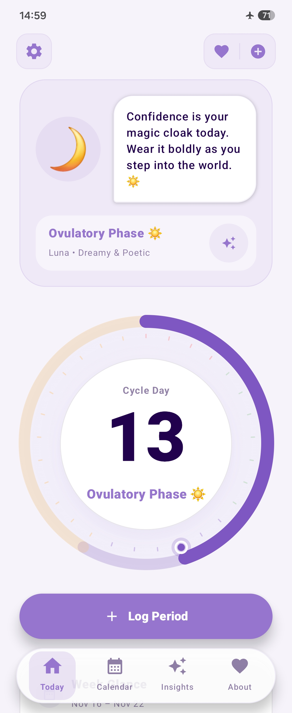

Cycle clarity, engineered for total privacy.
Track inner seasons, pair with vibe-matched companions, share cadence offline via Partner Companion Mode, and keep your health logs encrypted on your device[cite: 2, 4, 6].
Thoughtful wellness tools. Zero cloud servers.
Select a screen below to preview how Rhythm organizes cycle rhythm, companions, partner sync, and on-device security[cite: 2, 4, 6].

Comprehensive Daily Tracking Without the Clutter
Log period start/end dates, flow intensity, flow texture, menstrual products, pain levels, symptoms, mood, energy, sleep, digestion, skin, physical activity, hydration, cervical mucus, and personal notes[cite: 2, 4]. Everything is stored in a local Room database encrypted at rest with SQLCipher (256-bit AES) and Android Hardware Keystore keys[cite: 2, 6].
Four Phases, One Clear View
Translates menstrual, follicular, ovulatory, and luteal phases into Inner Winter, Spring, Summer, and Autumn so daily planning feels natural[cite: 2, 5].
Luna, Spark & Willow
Tailored daily wellness insights and gentle check-in nudges delivered in a voice that fits how you want to be supported[cite: 2, 5].
Care Cues via Peer-to-Peer Sync
Share high-level cycle cadence, prediction anchors, and care notes via QR code, JSON package, or text summary—with zero cloud servers.
Home Widgets & Local Nudges
Add Rhythm, Harmony, or Companion widgets to your home screen and schedule exact local reminders via AlarmManager and WorkManager[cite: 2, 6].
Full Ownership of Every Record
Generate formatted PDF summaries for doctor visits, export CSV tables or JSON backups via Android's file picker, toggle Discreet Mode and FLAG_SECURE screen protection, or erase all data immediately with Wipe All Data[cite: 2, 6].
Zero Ads, Zero Trackers
No behavioral ads or analytics SDKs[cite: 2, 6]. Optional tips are processed cleanly through Google Play Billing without unlocking paywalls.
Important Medical, Contraception & Emergency Notice
Not a Medical Device or Contraceptive Method: Rhythm Cycle Tracker ("Rhythm") is designed solely for personal wellness awareness and informational cycle logging. It is not a certified medical device, clinical diagnostic tool, or healthcare service[cite: 6].
Strictly Not for Birth Control or Family Planning: Do not rely on Rhythm's cycle estimates, ovulation projections, fertile window calculations, or Partner Companion Mode alerts/notifications to prevent or achieve pregnancy, or for natural family planning[cite: 6]. Biological cycles fluctuate naturally due to stress, travel, illness, hormonal shifts, and conditions such as PCOS[cite: 6]. Always consult a qualified healthcare professional for medical advice, diagnosis, contraception, or treatment[cite: 6].
Medical Emergencies: If you experience severe pelvic or abdominal pain, abnormal heavy bleeding, dizziness, fainting, or any acute medical symptoms, call your local emergency services (such as 112 or 911) or seek immediate emergency medical care.
01 Developer Identity & Overview
Rhythm Cycle Tracker (Android package ID: com.aistudio.periodtracker.kpzwqn) is developed and published by [Your Full Name / Developer Name], an independent developer based in India ("we", "us", or "our"). For any privacy questions, feedback, or data inquiries, you can reach us directly at admin.rhythm@gmail.com.
Rhythm is built with an offline-first architecture[cite: 2, 6]. We do not operate backend servers, user accounts, or remote databases[cite: 2, 6]. The application explicitly removes the Android android.permission.INTERNET permission from its manifest, meaning the app itself does not transmit your logged health records to us or any external server[cite: 2, 6].
02 Information Stored Locally on Your Device
All cycle and wellness information you enter into Rhythm is stored exclusively on your physical device[cite: 2, 6]:
- Cycle & Wellness Logs (Encrypted Database): Period start and end dates, flow intensity, flow texture (such as fluid, spotting, or clots), menstrual product used, pain levels, physical symptoms, mood, energy levels, sleep quality, digestion, skin observations, physical activity levels, medication notes, hydration counts, cervical mucus observations, and personal daily notes are stored in a local Room SQLite database encrypted at rest using SQLCipher (256-bit AES) with keys managed by the Android Hardware Keystore[cite: 2, 6].
- Profile, Settings, Custom Avatar & Widget Summary Storage (Private Sandbox): Optional profile details (such as display name, age, gender/sex, height, weight, wellness goals, and cycle tracking mode), app settings (such as PIN configuration and reminder preferences), and the current cycle status values displayed on home-screen widgets (current cycle day, phase name, days until next period, and companion icon) are kept in the application's private, OS-sandboxed Android Jetpack DataStore storage, which is separate from the SQLCipher-encrypted database[cite: 2, 6]. If you select a custom profile picture, the selected image is copied into the app's private internal file directory (
filesDir). - OS Cloud Backups Disabled: Automatic operating-system cloud backups (Google Drive device backup) and ADB device-to-device transfers are explicitly disabled (
allowBackup="false") for Rhythm's database and preference directories so your logs are not uploaded to cloud storage without your knowledge[cite: 2, 6].
03 Important Warning Regarding Data Loss & Device Changes
Because your database encryption key is hardware-bound to your specific device and cloud backups are disabled, we have no way to access, view, or recover your data[cite: 6]:
- Device Loss, Reset, or Uninstall: If you lose or damage your phone, switch to a new phone, clear the app's storage, or uninstall Rhythm, all locally stored cycle history and logs will be permanently lost unless you have previously exported a manual backup[cite: 6].
- Forgotten PIN: Because there are no user accounts or servers, there is no remote "Forgot PIN" recovery option. If you forget your 4-digit PIN and do not have Biometric Lock enabled, you will need to clear the application's storage in Android settings to use the app again, which permanently erases all stored data.
- How to Move Your Data: To preserve your records when upgrading phones, use the in-app manual JSON Backup Export feature prior to switching devices[cite: 2, 6].
04 Permissions & Device Capabilities Used
Rhythm requests or merges only the system permissions and device capabilities required for local app functionality, scheduled reminders, biometric lock, peer-to-peer partner sync, and optional Google Play Billing[cite: 2, 6]:
| Permission / Component | Why It Is Included |
|---|---|
POST_NOTIFICATIONS |
Displays optional local cycle reminders, daily wellness check-in nudges, and Partner Companion Mode alerts (such as Day 1 Care Alerts, High-Energy & Ovulation Alerts, and Morning Wingman Briefings via the wellness_partner / Partner Care & Wingman Alerts channel) that you enable in Settings[cite: 2]. |
SCHEDULE_EXACT_ALARM / USE_EXACT_ALARM |
Used to trigger user-configured daily wellness check-ins, cycle reminders, and scheduled Partner Companion Mode morning wingman briefings or cycle heads-up alerts at the exact local time selected by the user, executed entirely on-device via Android's AlarmManager. |
VIBRATE |
Provides optional tactile haptic feedback on button taps. |
USE_BIOMETRIC / USE_FINGERPRINT |
Added by the AndroidX Biometric library so you can unlock the app using your device's fingerprint or face authentication via Android's system BiometricPrompt[cite: 2, 6]. Rhythm only receives a pass/fail result and never accesses or stores raw biometric data[cite: 2]. |
RECEIVE_BOOT_COMPLETED |
Allows the app and Android WorkManager to reschedule your enabled local reminders and widget updates after you restart your phone[cite: 2]. |
WAKE_LOCK |
Added by Android WorkManager to reliably run brief local background tasks (such as evaluating local notifications and refreshing home-screen widgets)[cite: 2]. |
com.android.vending.BILLING |
Added by the Google Play Billing Library to process optional, voluntary developer support tips through the Google Play Store[cite: 2, 6]. |
ACCESS_NETWORK_STATE |
Merged automatically by Android WorkManager and Google Play Billing libraries to check device connectivity state. Because android.permission.INTERNET is explicitly removed from Rhythm's manifest, Rhythm itself cannot open network connections or transmit data[cite: 2, 6]. |
Google Play Services Code Scanner (com.google.android.gms:play-services-code-scanner) |
Used when scanning a partner's sync QR code. This API runs inside a system-level modal provided by Google Play Services, allowing camera-based QR code scanning without granting Rhythm Android camera permissions (android.permission.CAMERA). |
Android System Photo Picker (PickVisualMedia) & On-Device QR Decoding |
Used when picking a custom profile avatar or importing a QR code from a photo or screenshot. Android's Photo Picker grants access only to the single image you explicitly select, and any QR code image is decoded completely on-device (via ML Kit / ZXing) without requiring broad media or storage permissions (READ_MEDIA_IMAGES / READ_EXTERNAL_STORAGE). |
Rhythm does not request location, camera (android.permission.CAMERA), microphone, contacts, or broad external storage/media permissions[cite: 6].
05 Shared Devices, Home-Screen Widgets, Notifications & Screen Protection
If other people have physical access to your or your partner's phone, cycle information could be viewed unless appropriate privacy and OS settings are configured[cite: 2]:
- App Lock (PIN & Biometrics): Enable App Lock in Settings to require authentication whenever Rhythm is opened or resumed from the background[cite: 2, 6].
- Discreet Mode: Replaces explicit menstrual and fertility terminology on in-app dashboard cards and notifications with neutral wellness phrasing[cite: 2].
- Screen Capture Block: When App Lock or Discreet Mode is active, Rhythm enables Android's
FLAG_SECUREwindow flag inside the app to block screenshots, screen recording, and previews in the recent-apps switcher[cite: 2, 6]. - Home-Screen Widgets & Partner Compass Visibility: Rhythm includes optional Android home-screen widgets (Rhythm, Harmony, and Companion widgets) as well as Partner Companion views/compasses for quick at-a-glance access to cycle day, phase, days until next period, daily companion tips, and care guidance. Home-screen widgets sit outside the application's PIN/Biometric App Lock, Discreet Mode masking, and
FLAG_SECUREscreen protection, meaning anyone who can view an unlocked home screen can see them. Furthermore, if a partner places home-screen widgets or views Partner Companion status on their device, the estimated cycle phase and care tips will be visible to anyone with physical access to their unlocked phone. If you or a partner share a device or want maximum visual discretion, do not place Rhythm widgets on the home screen (or remove them at any time by long-pressing the widget). - Partner Notification Channels & Lock-Screen Visibility: Partner Companion Mode uses dedicated notification alerts—such as Day 1 Care Alerts, High-Energy & Ovulation Alerts, and Morning Wingman Briefings—to surface care reminders and cycle updates. While Discreet Mode phrases notifications neutrally when enabled, notification banners can still appear on an unlocked screen or lock screen unless you or your partner configure your Android lock-screen privacy settings to hide sensitive notification content.
06 User-Initiated Exports (Unencrypted File Warning)
Rhythm allows you to export your records as PDF summaries, CSV tables, or JSON backup files using Android's system file picker (Storage Access Framework) or system share sheet[cite: 2, 6].
Security Warning for Exported Files: Once you export a PDF, CSV, or JSON file outside Rhythm, that exported file is stored in plain, unencrypted format so that it can be read by PDF viewers, spreadsheet apps, or restored on a new phone. Anyone with access to your device's file folders, email, or cloud drive where you choose to save or share that file will be able to read its contents. You are solely responsible for safeguarding or deleting exported files after use[cite: 2, 6].
07 Partner Companion Mode & Peer-to-Peer Sync
Rhythm offers an optional Partner Companion Mode so a primary user can share high-level cycle cadence and care guidance with a chosen partner without using cloud servers[cite: 2, 7]:
- Air-Gapped, Zero-Cloud Transmission: Partner Mode does not use backend servers, user accounts, or cloud databases[cite: 2, 7]. Data synchronization occurs strictly peer-to-peer and offline via user-generated QR codes, direct file transfers (such as JSON sync packages), or plain-text summaries initiated manually by the primary user.
- Strict Data Minimization ("Privacy Shield"): Rhythm enforces a strict boundary between high-level cycle cadence and intimate daily health logs:
- What IS Transferred: Cycle cadence metrics (average cycle length, period duration), start and end dates of recent periods, current cycle day, estimated phase/season, calculated prediction anchors (estimated next period, estimated fertile/ovulation window, cadence variance), general aggregate energy scores, cycle tracking mode, and optional user-entered care or comfort notes.
- What Is NEVER Transferred: Daily symptom logs (such as cramps, headache, or nausea), flow intensity, flow texture, cervical mucus observations, pain scale ratings, sexual activity logs, medication logs, personal diary notes, and hydration counters. Intimate wellness details remain exclusively on the primary user's phone[cite: 2, 7].
- Transit Security Warning for Shared Channels: When a user chooses to share a QR code image, sync file, or plain-text summary through a third-party messaging app, SMS, email, or cloud service (such as WhatsApp, Telegram, or email), that shared artifact leaves Rhythm's local sandbox and becomes subject to the security, encryption, retention, and privacy practices of the third-party communication service and any recipient who receives it.
- Partner Device Storage & Isolation: When a partner imports a sync package, the transferred cadence metrics, prediction anchors, and care notes are stored locally on the partner's device in their private DataStore and encrypted database. Because there is no live cloud connection between devices, each phone's storage remains independent, and the partner can erase all synced partner data at any time via Clear Partner Sync or Wipe All Data.
08 No Advertising, Analytics, or Third-Party Data Sharing
- Rhythm does not include third-party advertising SDKs or behavioral profiling tools[cite: 2, 6].
- Rhythm does not bundle third-party crash-reporting or analytics telemetry SDKs[cite: 2, 6].
- We never sell, rent, trade, or share your personal or reproductive health data[cite: 2, 6].
- Google Play Billing & Bundled Transport Libraries: Rhythm includes the official Google Play Billing Library solely for optional user tips[cite: 2, 6]. This library pulls in standard Google transport components (
datatransport) as transitive dependencies, but because Rhythm stripsandroid.permission.INTERNETfrom the final app manifest, these components cannot open network connections or transmit data from within Rhythm[cite: 2, 6]. When you install Rhythm, update the app, or make an optional contribution through the tip jar, the Google Play Store app independently processes installation diagnostics and purchase transactions under Google's Privacy Policy[cite: 2, 6]. Rhythm never receives your credit card, UPI, or banking details, and your health logs are never linked to Google Play Billing transactions[cite: 2, 6]. - Send Feedback Feature: Tapping "Send Feedback" in Settings opens your device's default email application with a draft addressed to our support email, pre-filled with your device model, Android version, and Rhythm app version to help us troubleshoot bugs. No information is sent unless you review and press send in your email app.
09 Data Retention, Security Summary & Deletion
Security Summary: Your health logs are protected on-device via a 256-bit AES SQLCipher encrypted database, an Android Hardware Keystore-managed encryption key, optional PIN/biometric App Lock, peer-to-peer data minimization in Partner Mode, and zero internet permission requested by the app[cite: 2, 6].
- Local Retention Only: Your data stays exclusively on your device until you choose to delete it[cite: 2, 6]. Because Rhythm has no backend servers or user accounts, we hold zero copies of your records[cite: 2, 6].
- Permanent Deletion on Primary Device: Tapping Settings → Wipe All Data inside the app, clearing the app's storage in Android system settings, or uninstalling Rhythm permanently and irreversibly deletes all stored logs, history, and preferences from your device[cite: 2, 6].
- Partner Device Deletion ("Clear Partner Sync"): On a partner device, selecting Clear Partner Sync immediately and irreversibly deletes synced partner periods, predictions, cadence metrics, and care notes from that device's local database and DataStore. Selecting Wipe All Data, clearing app storage, or uninstalling Rhythm on the partner device likewise removes local partner records.
- Independent Life Cycles: Because Rhythm has no cloud server or live two-way sync link, deleting or resetting data on one phone does not automatically delete data already imported onto another phone.
- Exported & Shared Files: Any PDF, CSV, JSON sync files, QR images, or text messages exported or shared outside Rhythm's sandbox must be managed or deleted manually by you (and by any recipient where applicable)[cite: 2, 6].
10 Your Rights & Data Control
Because all data resides locally on your device, you can exercise your data rights (including access, correction, portability, revocation/withdrawal of sharing, and erasure) directly inside the application at any time without needing to submit a request to us[cite: 2, 6]:
- Access & Correction: View or edit any logged period date, symptom, note, or profile field directly within the Calendar and Settings screens.
- Portability: Export your complete data in JSON, CSV, or PDF format via Settings[cite: 2, 6].
- Revoking Partner Sharing: Because Partner Companion Mode shares offline point-in-time snapshots rather than a live cloud stream, the primary user cannot remotely recall or erase data that has already been imported onto a partner's device. To stop sharing future updates, the primary user simply stops generating or sending new sync codes, exports, or summaries; to remove previously synced data from a partner's phone, the partner must tap Clear Partner Sync (or Wipe All Data / uninstall the app) on their own device.
- Questions or Grievances: If you have questions or complaints regarding your privacy rights, contact the developer at admin.rhythm@gmail.com.
11 Age Requirement (13+) & Minor Privacy
Rhythm is intended for users aged 13 and older. We do not direct the application toward children under 13.
- Minors (Ages 13 to 17): If you are under the age of 18 (or the age of legal majority in your jurisdiction), please review this Privacy Policy, the Terms of Use, and the Medical Disclaimer with a parent or legal guardian before using the app (including before enabling Partner Companion Mode or sharing cycle cadence with another person). Optional tips via Google Play Billing require the permission of a parent or the legal account holder.
- No Server Collection or Profiling of Minors: Because Rhythm stores all logs locally on the user's device and includes no analytics, advertising, or network transmission capabilities, we do not collect, store on external servers, or behaviorally profile personal data from users of any age[cite: 2, 6].
12 Changes to This Privacy Policy
If we update this Privacy Policy to reflect new on-device features or regulatory requirements, we will post the updated policy on this page and revise the "Effective & Last Updated" date at the top of this document and inside the application[cite: 2].
13 Informational Wellness Purpose Only
By downloading or using Rhythm Cycle Tracker, you acknowledge and agree that all cycle predictions, phase indicators ("Inner Seasons"), ovulation estimates, fertile window projections, wellness companion tips, Partner Companion Mode alerts, Partner Support Guide cues, and generated PDF reports are mathematical approximations based solely on self-reported user entries[cite: 2, 5, 6]. They are provided strictly for personal educational and wellness tracking purposes and do not constitute clinical advice, medical diagnosis, natural family planning, or contraception[cite: 6].
In particular, fertile window projections, ovulation estimates, and care reminders surfaced in Partner Companion Mode are estimates derived from historical cycle cadence and must never be relied upon by either the primary user or a partner to prevent or achieve pregnancy[cite: 6].
14 Partner Mode: Mutual Consent & Responsible Sharing
- Mutual Consent Mandate: You agree to use Partner Companion Mode and share rhythm data, QR codes, sync packages, or text summaries only with partners who have explicitly consented to receiving that information. You must never export, scan, import, or share another person's cycle or health data without their clear, informed consent.
- Intended Use for Care & Emotional Support: Partner Companion Mode is provided solely to support mutual empathy, thoughtful daily care gestures, and communication between consenting partners. The developer is not responsible for interpersonal misunderstandings, relationship disputes, emotional reactions, or decisions made based on algorithmic estimates or care suggestions in the Partner Guide.
- Offline Snapshot & No Real-Time Guarantee: Rhythm does not provide live real-time tracking, continuous background syncing, or location/status monitoring. Any data displayed on a partner's device represents an offline snapshot from the last time a manual sync occurred and may be out of date or inaccurate if cycles shift, are delayed, or are affected by stress, illness, travel, or hormonal changes.
15 Voluntary Tips & In-App Support
Rhythm Cycle Tracker is completely free to use with no locked features, subscriptions, or paywalls. Any in-app contributions made through the "Support Rhythm" tip jar are strictly voluntary, do not unlock additional functionality or content, and are processed exclusively by Google Play[cite: 2, 6]. All refund requests for tips are governed by Google Play's standard refund policies.
16 Open-Source Software Licenses
Rhythm Cycle Tracker incorporates open-source software libraries (including Android Jetpack, Kotlin Coroutines, Dagger Hilt, Coil, Material Components 3, SQLCipher for Android, Google Play Services Code Scanner, and the Google Play Billing Library). Full third-party acknowledgments and license notices are available inside the application under Settings → Open Source Licenses.
17 Disclaimer of Warranties & Limitation of Liability
Rhythm Cycle Tracker is provided on an "AS IS" and "AS AVAILABLE" basis without warranties of any kind, whether express or implied, including implied warranties of merchantability, fitness for a particular purpose, or accuracy of algorithmic estimates[cite: 6].
To the maximum extent permitted by applicable law, the developer shall not be liable for any direct, indirect, incidental, special, or consequential damages, or for any loss of local data (including from forgotten PINs, device damage, or unencrypted exports), arising out of your use of the application[cite: 6]. Without limiting the generality of the foregoing, the developer disclaims liability for: (a) any unauthorized access, disclosure, or interception occurring when QR codes, sync files, or summaries are transmitted or stored via third-party messaging apps, email, or external file storage; and (b) any relationship disputes, unintended pregnancies, or health decisions resulting from reliance on Partner Companion predictions, care tips, or notifications. Nothing in these terms excludes or limits liability where such exclusion or limitation is prohibited by applicable consumer protection laws in your jurisdiction.
18 Governing Law, Jurisdiction & Contact Information
These Terms of Use and Privacy Policy are governed by the laws of India, and any disputes arising out of or relating to the application shall be subject to the exclusive jurisdiction of the courts at Nagpur, Maharashtra, India, without prejudice to mandatory consumer protection or data privacy provisions applicable in your country of residence.
Developer & Grievance Contact:
Developer: [Your Full Name / Developer Name]
Location: Nagpur, Maharashtra, India
Email: admin.rhythm@gmail.com